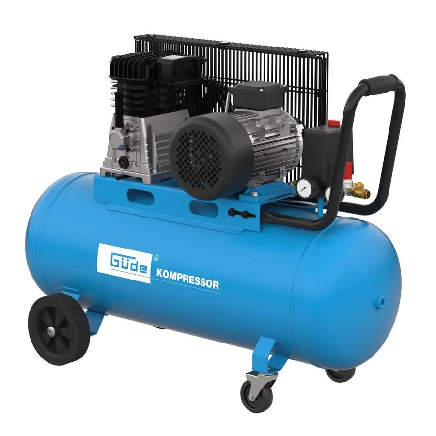
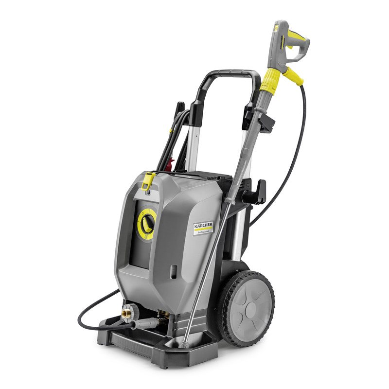
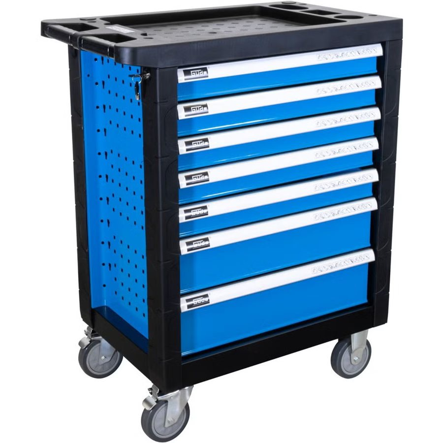
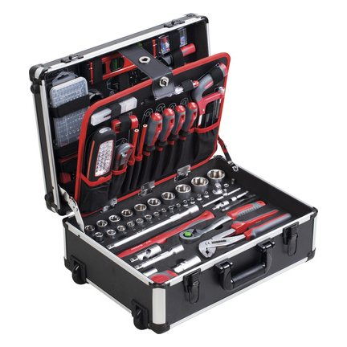

Home / Workshop & Vehicle Equipment / Compressed-air accessory set for compressors (PU spiral hose 5/8/10 m selectable, quick coupling, blow gun, tyre inflator)

Illustration similar – shows the product type.
Workshop & Vehicle Equipment
Compressed-air accessory set for compressors (PU spiral hose 5/8/10 m selectable, quick coupling, blow gun, tyre inflator)
Starter set of blow gun, tyre inflator and PU spiral hose with quick coupling for compressors up to 8 bar.
The set turns the compressor into a workshop and garage tool: the blow gun cleans workpiece and workplace, the tyre inflator fills tyres, and the PU spiral hose with quick coupling connects both to the compressed-air outlet. Discerning buyers in Germany expect an ageing- and kink-resistant PU hose, a blow gun with a metal nozzle, a tyre inflator with brass valve clamp and pressure gauge, and a coupling profile that fits the compressor outlet (usual in Germany: Euro profile NW 7.2).
Technical data
| Set contents | Blow gun, PU spiral hose, tyre inflator with valve clamp, quick coupling |
|---|---|
| Hose | PU spiral hose 6 × 4 mm (OD × ID), length 5/8/10 m selectable |
| Working pressure | 0–8 bar |
| Blow gun | High-impact plastic body with stainless-steel nozzle |
| Tyre inflator | Clip-on brass valve chuck |
| Connection | 1/4 inch quick plug for compressor; coupling profile selectable, specify Euro NW 7.2 |
| Operating temperature | 0–60 °C |
| Packaging | Blister or bulk; carton 48 × 45 × 40 cm, approx.; 15 kg gross |
| Customs tariff number (HS) | 82055980 |
EU standards and regulations
Verordnung (EU) 2023/988General Product Safety Regulation (GPSR): EU responsible person, labelling, traceabilityREACH (EG) Nr. 1907/2006Chemicals law: SVHC, nickel and chromium(VI) in coatings, plasticisers in plastic partsEN ISO 4414Pneumatic fluid power: general rules and safety requirements for systems and their components2014/68/EU4(3) (sound engineering practice) appliesVerpackG / LUCID
Goes well with

Piston air compressor 500 l, 10 bar, 400 VStationary three-phase piston compressor with a 500 l receiver for compressed-air tools in workshop and yard.

Pneumatic nailer 15–50 mm (brad/finish nailer, 6–8 bar)Pneumatic nailer for formwork, timber construction, roof battens and interior fit-out – high driving rate with low fatigue.
More products in this category

Two-post car lift 4 t, electro-hydraulic

Scissor lift 3.5–4 t, double scissor, electro-hydraulicElectro-hydraulic double-scissor lift for cars and vans with no columns in the work area.
Automatic gantry vehicle wash system

Cold-water high-pressure cleaner 200 bar, 400 V three-phaseMobile cold-water high-pressure cleaner for vehicles, machines and yard in continuous use.

Workshop workbench with drawers, 2 mSturdy steel workbench with multiplex top and lockable drawers for workshop and store.

Hydraulic trolley jack 3 t

Tool trolley (roller cabinet) with 7 drawers, steelMobile steel tool trolley with seven ball-bearing drawers and central lock.

Two-post vehicle lift 4.5 t, heavy duty hydraulic

Axle stands 3 t, set of 2 (pair), height-adjustable 275–415 mm with ratchet mechanismPair of steel axle stands rated 3 t each that safely support a vehicle raised with a trolley jack.

Torque wrench set 1/2 inch, 28–210 Nm, with 17/19 mm sockets and extension (wheel change)Click-type torque wrench with 1/2 inch square drive for wheel nuts, supplied as a set with sockets and extension.

Tool assortment 216 pieces (1/4, 3/8 and 1/2 inch sockets, ratchets, spanners, bits) in case for tool trolleysSorted mechanic's assortment of 216 pieces that turns an empty tool trolley into ready-to-use workshop equipment.

Motorcycle lift 500 kg, hydraulic scissor tableMobile hydraulic scissor lift for motorcycles up to 500 kg.

OBD2 diagnostic scanner with TPMS functionHandheld tool for reading fault codes and tyre-pressure sensors.

Automatic tyre changer, passenger carWorkshop tyre changer with helper arm for car wheels.

Foldable engine crane 2 t, hydraulicFoldable hydraulic shop crane for engines up to 2 t.

Waste oil drainer 80 l, pneumatic, mobileMobile 80 l tank for extracting waste oil with compressed air.

MIG/MMA welding inverter 200 AInverter welder for MIG and stick up to 200 A.

Battery charger 12/24 V, 10 A, automaticAutomatic charger for 12 V and 24 V lead-acid batteries.
Wheel balancer, passenger carElectronic balancing machine for car wheels.